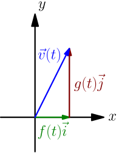
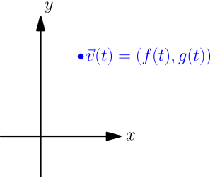
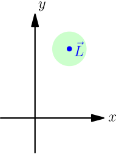
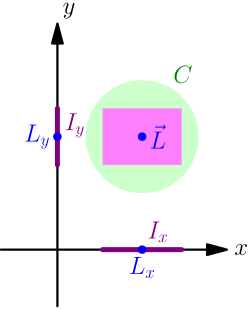

Limit of a Vector-valued Function¶
Let $\vec v$ be a function that takes in a number and outputs a 2D vector. In other words, we have $$ \vec v(t) = f(t)\I + g(t)\J, $$ where $f$ and $g$ are functions that take in a number and output a number, like most other functions that we have seen before.
Functions like this $\vec v$ are called vector-valued, because their values (aka outputs) are vectors. It's tempting to call $f$ and $g$ number-valued, but it's more common to call them real-valued; here "real" refers to real numbers, which we tend to abbreviate as just numbers.
To visualize a vector-valued function, imagine that the input $t$ is on a number line.
Now imagine a 2D plane where the resulting vector is, so that the "start" of the vector is at the origin.

The resulting vector depends on where $t$ is on the number line. You can think of the $t$ number line as a slider, and the output vector $\vec v(t)$ as a vector that moves as you slide $t$ on the number line.
In this context, we think of vectors and points as the same thing; 2D vectors and 2D points are just pairs of numbers anyway, so we won't bother with making a distinction between a vector $a\I+b\J$ and a point $(a,b)$. This leads to a slightly different visualization, where instead of a vector, you have a point that moves as you slide $t$ on the number line:

Vector-valued functions are useful in physics. Typically $t$ is time, and $\vec v(t)$ is a vector representing something that changes over time, such as the location or velocity of an object. The location makes sense as a point, and the velocity makes sense as a vector; it's a vector whose length is the speed, and the direction of the vector tells the direction in which the object is moving.
Almost all of the theory that I present for 2D vectors also works in 3D, although in many physics problems, everything happens in one plane and 2D vectors are enough to describe the situation.
Defining the limit¶
To define $\lim_{t \to a} \vec v(t)$, we look at what has to be changed in the definition of limit for real-valued functions. The inputs of the function are still numbers, so the input interval can stay the same, although we'll typically call it $I_t$ rather than $I_x$.
Now the outputs of the function are vectors, so we can't use an interval consisting of numbers for those. The idea with using an interval of numbers for output was that a small open interval centered around a number $L$ contains numbers that are near $L$. For a vector $\vec L$, visualized as a point, a similar idea of nearness is given by a circle.

In this context, the boundary is not included in the circle; only the interior of the circle is included. This corresponds to how we used open intervals in the past. Circles consisting of only the interior are often called 2D balls, but I don't do that on this site, because a ball means a 3D thing for many people.
We have arrived at the following definition:
Let $a$ be a number, let $\vec L$ be a 2D vector, and let $\vec v$ be a 2D-vector-valued function. We write $\lim_{t \to a} \vec v(t) = \vec L$, if for any circle $C$ centered around $\vec L$, there is an open interval $I_t$ centered around $a$ such that $$ \vec v(\text{any number in $I_t$ except $a$}) \in C. $$ Here I refer to $I_t$ as the input interval, and I refer to $C$ as the output circle.
Taking limits of $\I$ and $\J$ parts separately¶
Let $\vec v(t) = (f(t), g(t))$ be a 2D-vector-valued function. Suppose that the limits $\lim_{t \to a} f(t) = L_x$ and $\lim_{t \to a} g(t) = L_y$ exist. Let $$ \vec L = (L_x, L_y) = \left( \lim_{t \to a} f(t), ~ \lim_{t \to a} g(t) \right). $$ We show that $\lim_{x \to a} \vec f(t) = \vec L$. Let $C$ be any output circle centered around $L$. We pick a rectangle inside the circle, rotated so that its sides are parallel with $x$ and $y$ axes, and centered around $L$. (There are infinitely many such rectangles; we just pick one.)

The rectangle consists of points whose $x$ coordinate is in some open interval $I_x$ centered around $L_x$, and whose $y$ coordinate is in some open interval $I_y$ centered around $L_y$. By using $I_x$ as the output interval of $\lim_{x \to a} f(x) = L_x$ and $I_y$ as the output interval of $\lim_{x \to a} f(x) = L_y$, we get two open input intervals centered around $a$ such that $$ \begin{align} &f(\text{any number in the first input interval except $a$}) \in I_x, \\ &g(\text{any number in the second input interval except $a$}) \in I_y. \end{align} $$
One of these input intervals is a subset of the other. Let $I_t$ denote that "smaller" interval. Now any number in $I_t$ is in both input intervals, and we have $$ \begin{align} &f(\text{any number in $I_t$ except $a$}) \in I_x, \\ &g(\text{any number in $I_t$ except $a$}) \in I_y. \end{align} $$ This means that $$ \vec v(\text{any number in $I_t$ except $a$}) \in \text{the rectangle}, $$ and because the rectangle is inside the circle $C$, we have $$ \vec v(\text{any number in $I_t$ except $a$}) \in C. $$
So, if $\lim_{t \to a} f(t) = L_x$ and $\lim_{t \to a} g(t) = L_y$, then $\lim_{t \to a} (f(t), g(t)) = (L_x, L_y)$. This also goes the other way, and the proof is similar; the biggest difference is that instead of choosing a rectangle inside a circle, we choose a circle inside a rectangle.
Let $f$ and $g$ be real-valued functions. Then the limit $\lim_{t \to a} (f(t), g(t))$ exists if and only if both of the limits $\lim_{t \to a} f(t)$ and $\lim_{t \to a} g(t)$ exist, and in that case, we have $$ \lim_{t \to a} (f(t), g(t)) = \left( \lim_{t \to a} f(t), ~ \lim_{t \to a} g(t) \right). $$
Essentially this result says that we can calculate any limit of a vector-valued function by separately calculating limits of the $\I$ and $\J$ parts (that is, $x$ and $y$ coordinates). This is called calculating the limits component-wise. The result is nice, because we know how to calculate limits of real-valued functions. If only one of those limits exists or neither of them exists, then the limit of the vector-valued function doesn't exist either.